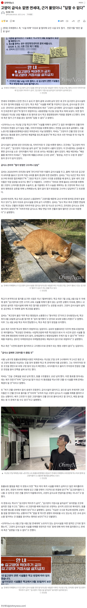
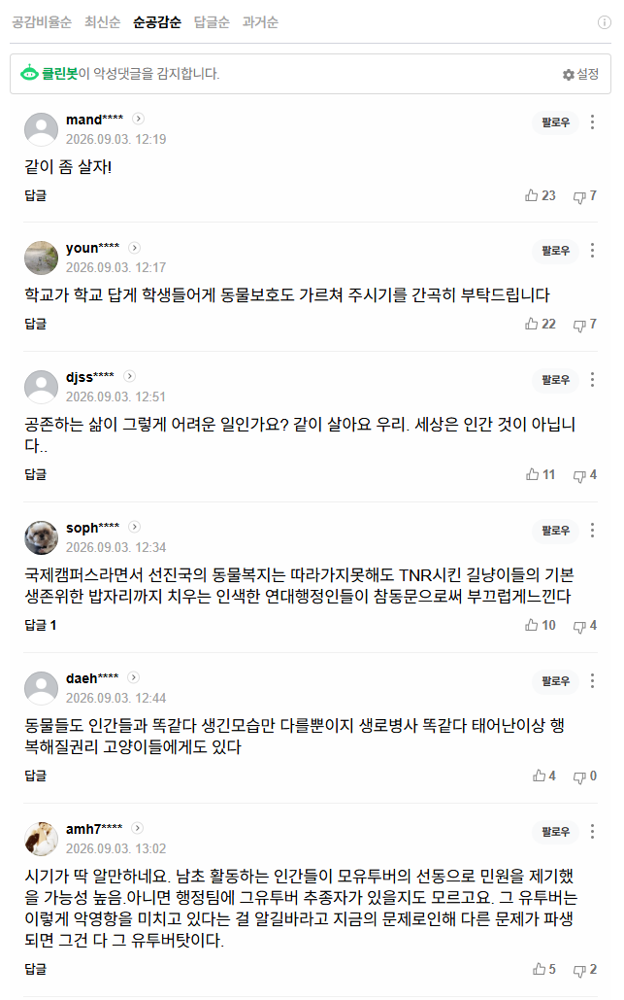

캣맘들한테 새덕후는 이제 완전한 주적이네


캣맘들한테 새덕후는 이제 완전한 주적이네
씨바련들 집집마다 더러운 길고양이 10마리씩 분배
고양이가 ㄹㅇ 진짜 쉽지 않은 게
변식력도 대단하고 생태계 파괴력이 만만치 않음
임신 기간도 짧고 1년에 여러 번 가능하지 한 번 낳으면
평균3-5마리 1년에는 10마리 까지도 낳는다 함
개체수는 개빠르게 늘어나는데 상위포식자도 없지 오히려 불쌍하다고 밥주면 한국 생태계 파괴는 더 가속화 되는 거라고 봄 까놓고 말하면 고양이만 야생동물이냐고…
더 나아가 호주는 원래 고양이가 없는 지역임 어느순간 고양이의 개체수가 늘어났고 고양이로 인해 매년 수십억마리의 동물들이 사망함
사료 주는 것과 호주의 고양이와 비슷한 점은 인위적으로 발생함에 있어 파괴된다는 거임
감정적으로 보지 말고 이성적으로 보자고 본인들 유희를 위해서 행한 행동에 대해 책임을 지라고 그러지도 못하면 하지 말았으면 좋겠음
고양이 좋아하는 건 좋아하는 거고 나도 고양이 좋아하지만 하지말라는 행동은 하지마라;; 나중에 더 심화돼서 생태계 작살나면 나몰라라 숲 속 친구들 되지말고
길고양이도 참정권 줄 기세
길고양이에 별 감정은 없는데 저 구조에 꼬여든 행태가 그쪽이랑 똑같아서 소름ㅋㅋ 먹을 거 줬으면 좀 치워라 알박기도 아니고
동물보호가 고양이한테만 적용된다는 게 참...
고양이를 키우지만 길고양이는 길고양이고, 애완동물은 애완동물임. 억울?하면 책임지고 키우면됌 어려움?
1 더하기 1은 2지, 근거가 어딨어?
당연한 건 원래 근거가 없음.
근거말한다고 듣지도않을꺼면서 왜 근거를 말하라는거임?
꺄아아아악 나가!
공존 이러면서 막상 지들 집에 데려다 키우라면 조용해짐. 하여간 착한척은 하고 싶고 내가 책임지기는 싫고.